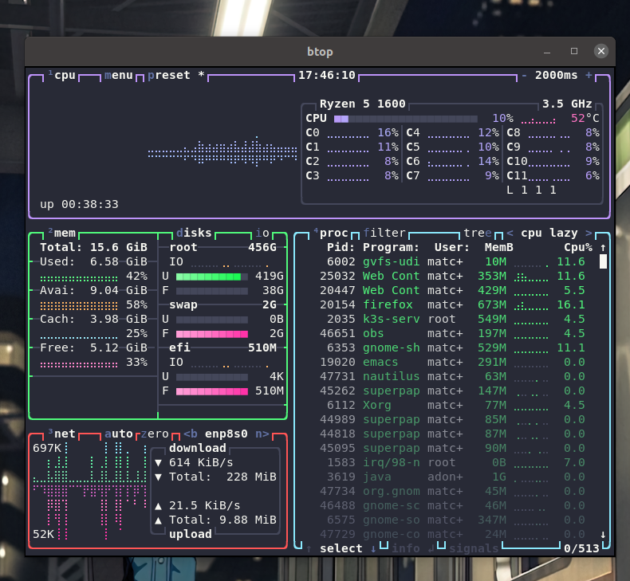
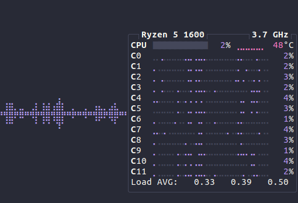
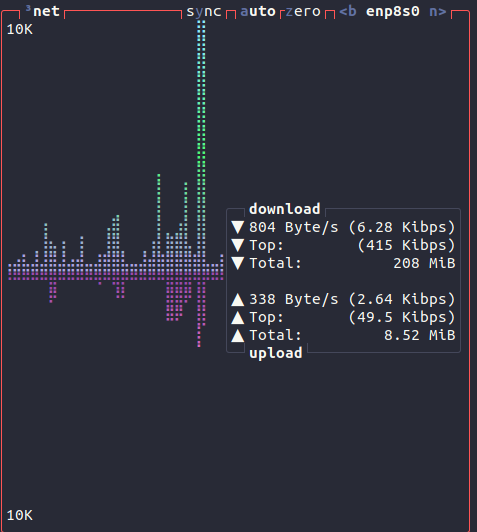
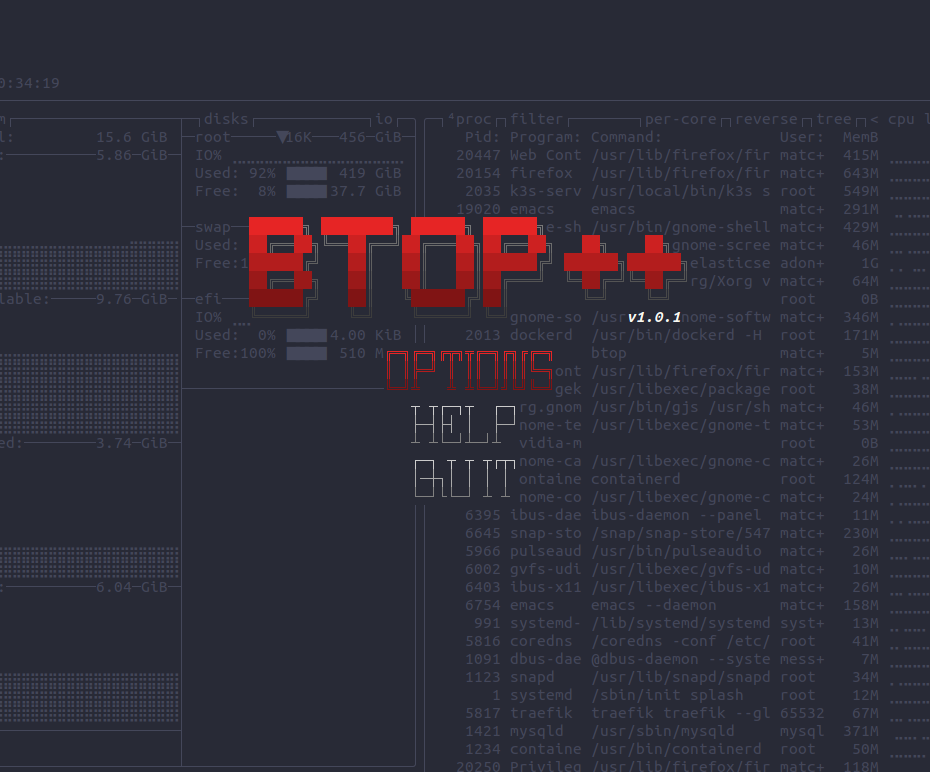

btop pour monitorer en lignes de commandes !

Btop est un outil qui vient tout juste de sortir en version stable (1.0.1 à l’heure où j’écris cet article).
C’est une évolution du programme bpytop, du même auteur, que j’avais déjà présenté en vidéo ( cf plus bas ). L’avantage de cette version est qu’elle est codée en C++ et est donc beaucoup beaucoup plus fluide et rapide ( ça se sent à l’utilisation ).
Cet outil permet de faire du monitoring à la manière de top ou htop mais de manière plus agréable et surtout avec des indicateurs supplémentaires.
Installation
L’installation se fait de manière fluide, le plus simple semble d’exécuter le script install.sh dans la release disponible sur Github.
|
|
Différences par rapport à top ou htop
Par rapport à top, on trouvera une liste de processus facilement accessibles et filtrables de manière ergonomique. Il suffit de se déplacer avec les flèches du clavier pour sélectionner un processus, on regrettera cependant l’absence de navigation VIM qui ne fonctionnait pas lors de mes tests 🥺.
Ce qui est très appréciable c’est que de la même manière que htop, on peut aussi envoyer des signaux au processus séléctionné grâce aux flèches directionnelles !
Ensuite, viennent les différences majeures par rapport à htop et à top.
Un visuel plus agréable et plus lisible
Déjà, niveau couleurs, c’est super agréable et ergonomique. L’utilisation des couleurs et de certains caractères spéciaux permettent d’avoir un rendu très visuel et lisible: on se croirait presque sorti du terminal.
Des graphiques de l’utilisation de ressources dans le temps !
Ensuite, côté visuel toujours, la possibilité d’avoir un graphique de l’utilisation du CPU et de la mémoire dans le temps est un plus indéniable. Ceci permettra d’identifier des pics d’utilisation des ressources monitorées !
{kind=link}
De nouvelles informations ajoutées, notamment… L’utilisation réseau !
L’ajout d’informations comme l’espace disque et surtout l’utilisation du réseau en font un outil beaucoup plus complet que ses alternatives.
On peut apercevoir la vitesse moyenne en upload et en download des paquets échangés via l’interface réseau.
{kind=link}
Un menu comme dans un jeu vidéo
Enfin, le programme est vraiment bien fini et travaillé; on a même la possibilité de sélectionner un thème de couleurs dans le menu.
L’utilisation des dégradés en font un logiciel agréable à regarder et pourquoi pas à laisser tourner lorsque l’on reçoit des invités 😜.
{kind=link}
On appréciera son interface qui est un bel hommage à d’anciens jeux de l’époque 🤩.
Vidéo
Ici, une vidéo dans laquelle je présente bpytop qui est l’ancienne version de btop!
@broken_matcha Monitoring avec bpytop! ##techtok ##informatique ##geek ##dev ##programmation ##code ##education ##tiktokacademie ##linux ##macos ##developpeur
♬ lofi and minimalist BGM(325514) - Kazuhi